방사선비파괴검사산업기사(구) (2002-09-08 기출문제)
1과목: 방사선투과검사 시험
1. X-선 발생장치의 관구에 부착한 여과판(filter)의 두께를 증가하면 그림과 같은 X선 스펙트럼은 어떻게 변하는가?
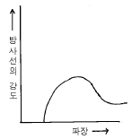
- 모양은 변하지 않고 방사선의 강도만 커진다.
- 더 짧은 파장이 나타난다.
- 방사선의 강도가 동일하게 증가한다.
- 곡선은 높은 에너지쪽으로 치중되고 강도는 낮아진다.
(정답률: 알수없음)

2. 다음 중 방사선투과시험으로 가장 발견되기 쉬운 결함은?
- 미세한 균열
- 군집 기공
- 라미네이션
- 미세한 융합부족
(정답률: 알수없음)
3. 다음 중 투과사진의 피사체 콘트라스트에 영향을 주는 인자가 아닌 것은?
- 피사체 두께의 절대치와 그 차
- 선원의 형상
- 피사체의 재질
- 방사선의 선질
(정답률: 알수없음)
4. γ선원의 강도는 같으나 비방사능이 다른, 두 선원의 설명으로 틀린 것은?
- 비방사능이 큰 선원이 체적이 작다.
- 비방사능이 큰 선원이 자기흡수가 작다.
- 비방사능이 작은 선원이 선명도(Sharpness)가 나쁘다.
- 비방사능이 작은 선원이 반감기가 짧다.
(정답률: 알수없음)
5. 다음 중 Ir-192의 γ선에 대한 반가층이 가장 얇은 것은?
- 철판
- 콘크리트
- 알루미늄
- 흙
(정답률: 알수없음)
6. 전도체이며 얇은 튜브 형태인 검사체를 단시간에 많은 양을 검사하기에 가장 적합한 비파괴검사법은?
- 방사선투과시험법
- 자분탐상시험법
- 침투탐상시험법
- 와전류탐상시험법
(정답률: 알수없음)
7. 금속결정의 구조 연구에서 X선 회절법을 이용하여 원자간의 거리 등을 측정하는데 nλ = 2d.sinθ라는 공식을 이용한다. 이 공식과 관련하여 다음 중 관계있는 것은?
- Heel Effect
- Beatly 법칙
- Bragg 법칙
- Skin Effect
(정답률: 알수없음)
8. 관전압[kV]에 따른 입상성에 대한 변화를 설명한 것으로 맞는 것은?
- kV와는 관계가 없다.
- kV 증가에 따라 감소한다.
- kV 증가에 따라 증가한다.
- kV 감소에 따라 증가한다.
(정답률: 알수없음)
9. 필름 콘트라스트란?
- 특성곡선상의 기울기
- 측정 가능한 최소의 농도차
- 필름상에서 두 인접한 부위에서의 농도차
- 시편에서 두 지역을 통과한 방사선의 강도비
(정답률: 알수없음)
10. 다음 방사선 장해 중 확률적 영향에 속하지 않는 것은?
- 암
- 백혈병
- 유전적 영향
- 수정체의 혼탁, 불임
(정답률: 알수없음)
11. 다른 비파괴검사법과 비교하여 방사선투과시험의 주요 장점이 아닌 것은?
- 검사결과의 영구기록
- 내부 결함의 검출
- 표면상 결함의 검출
- 조성의 주요 변화에 대한 검출
(정답률: 알수없음)
12. 다음 중 방사선투과사진의 감도와 분해능에 악영향을 미치는 2차 방사선이 아닌 것은?
- 광전자
- 콤프턴 전자
- 산란광자
- 내부전환전자
(정답률: 알수없음)
13. 다음 중 와전류탐상검사시 사용되는 시험코일의 종류가 아닌 것은?
- 내삽형 코일
- 표면형 코일
- 관통형 코일
- 대칭형 코일
(정답률: 알수없음)
14. 다음 중 1μ Ci와 같은 것은?
- 3.7x104 dps
- 2.22x106 dpm
- 3.7x106 dps
- 2.22x104 dpm
(정답률: 알수없음)
15. 다음 고에너지 X-선 발생장치 중 가장 상질이 우수한 투과사진을 얻을 수 있는 장치는?
- 반데그라프형 가속기
- 베타트론 가속기
- 선형 가속기
- 동조변압 X-선 장비
(정답률: 알수없음)
16. 방사선투과검사시 시험체의 명암도에 영향을 주는 인자가 아닌 것은?
- 시험체의 배치
- 시험체의 밀도
- 시험체의 두께
- 방사선의 에너지
(정답률: 알수없음)
17. 방사선투과시험에서 현상시 주의하여야 할 사항 중 틀린것은?
- 현상작업에 필요한 밝기를 조명해 주는 암등을 준비하여야 한다.
- 현상시 암등에 비추어 현상 정도를 파악한 후 작업을 정지시켜야 한다.
- 현상 및 정착시간과 현상온도를 일정하게 유지하여야 한다.
- 현상에 필요한 약품은 주어진 기준에 따라 일정하게 배합하여야 한다.
(정답률: 알수없음)
18. 관전류 5mA, 노출시간 10분에서 관전류를 10mA로 변환시 노출시간은 ?(단, 다른조건은 일정함)
- 20분
- 10분
- 5분
- 2.5분
(정답률: 알수없음)
19. 침투탐상검사에서 용제 세척방법으로 적절하지 않은 것은?
- 브러쉬로 고형물의 오염을 제거한다.
- 에어졸 타입의 세정제의 노즐을 시험면에 가까이하여 강하게 뿌려 준다.
- 수초간 방치한 후, 마른 걸래로 세정액을 닦아 낸다.
- 세정제를 시험면에 1회만 뿌려야 한다.
(정답률: 알수없음)
20. 개인 피폭선량계중에서 필름뱃지의 단점이 아닌 것은?
- 입사방사선의 에너지를 결정할 수 없다.
- 기계적 압력을 받았을 경우 뿌염현상이 생긴다.
- 습기가 많으면 잠상퇴행(fading of the latent image)이 생긴다.
- 방향 의존성이 있다.
(정답률: 알수없음)
2과목: 방사선투과검사 시험
21. 방사선 투과사진으로 판독할 수 있는 결함중 용접부 결함이 아닌 것은?
- 용입부족
- 언더 컷
- 콜드 셧
- 기공
(정답률: 알수없음)
22. 공업용 X선 발생장치를 이용하여 방사선투과검사를 실시한 후 투과필름을 현상처리하고자 한다. 현상처리 시설을 다음과 같은 탱크의 용량비로 하였을 때 상관관계로 적당하지 못한 것은?
- 현상탱크 : 2
- 정지탱크 : 1
- 정착탱크 : 3
- 수세탱크 : 4∼5
(정답률: 알수없음)
23. 방사선투과시험시 형광증감지는 연박증감지에 비해 어떤 점이 일차적인 장점인가?
- 노출시간 증가
- 노출시간 단축
- 영상의 선명도 증가
- 산란방사선에 효과적
(정답률: 알수없음)
24. 방사선발생장치를 이용하여 방사선 투과사진을 촬영할 때 여러 가지 요인에 의해 방사선 노출시간을 결정해야만 하는데 이 때 고려하지 않아도 되는 인자는?
- 검사제품의 투과두께
- 선원과 검사체사이의 거리
- 필름 감광속도
- 필름 크기
(정답률: 알수없음)
25. 선원.필름간 거리 60cm, 관전압 200kVP, 관전류 5mA, 노출시간 4분으로 농도 1.5가 되었다. 선원.필름간 거리를 80cm로 하여 농도 2.5의 사진을 얻기 위해 관전압 200kVP, 관전류 4mA에서의 노출시간은 처음의 몇 배인가? (단, 필름특성곡선에서 두 농도에 대한 대수상대 노출값의 차는 0.24 이다.)
- 약 1.7배
- 약 2.4배
- 약 3.2배
- 약 3.9배
(정답률: 알수없음)
26. 다음 용접부의 투과사진 농도에 대한 설명에서 최저농도는 어느 부위를 말하는가?
- 중앙 용접부의 가장 낮은 값
- 중앙 모재 부위의 가장 낮은 값
- 부분적으로 가장 낮은 값
- 계조계의 가장 낮은 값
(정답률: 알수없음)
27. 방사선투과시험에서 연(납)박증감지 취급시 가장 주의할 사항으로 올바른 것은?
- 연박증감지에 흠이 생기지 않도록 한다.
- 연박증감지 보관시 항상 70℃의 온도를 유지한다.
- 연박증감지 보관시 습도는 80% 이상이어야한다.
- 연박증감지는 직사광선을 피한다.
(정답률: 알수없음)
28. 형상이 복잡한 주물품은 제품 자체에서 많은 산란 방사선을 방출하는데 이 산란선을 감소시키기 위해 어떤 조치를 하는 것이 바람직한가?
- 납으로 된 마스크(mask)를 사용한다.
- 콜리메타(collimeter)를 사용한다.
- 다이아프램(diaphragm)을 사용한다.
- 필터(filter)를 사용한다.
(정답률: 알수없음)
29. 용접부 방사선 투과사진상에 용접선을 따라 중앙에 선명한 검은 직선형의 결함이 나타났을 때 결함의 종류로 가장 적절한 것은?
- 기공
- 용입부족
- 파이프
- 텅스텐 혼입
(정답률: 알수없음)
30. 모재와 용접금속이 표면이 접하는 부분에 의해 생기는 표면결함으로 나타나는 흠 형태 결함은?
- 언더컷
- 용락
- 융합불량
- 용입부족
(정답률: 알수없음)
31. 다음 중 얇은 두께의 소구경 배관용접부의 방사선투과시험에 적합하게 사용될 수 있는 방사성 동위원소는?
- Yb 169
- Cs 137
- Ir 192
- Co 60
(정답률: 알수없음)
32. 방사선투과검사시 동일한 방사능을 갖는 두 선원이 있을 경우 작은 크기를 갖는 방사선원을 사용하면 어떤 이점이 있는가 ?(즉, 선원의 초점크기가 작아지므로서)
- 필름을 빨리 감광시킨다.
- 증감지 사용이 불필요하다.
- 기하학적 불선명도가 작아져 필름의 상질을 높일 수있다.
- 기하학적 불선명도가 커져 필름의 상질을 높일 수 있다.
(정답률: 알수없음)
33. X선 발생장치의 X선에 대한 기술로 틀린 것은?
- 특성 X선을 발생시키기 위해서는 일정값 이상의 관전압이 필요하다.
- 일반적으로 X선에 의한 방사선투과시험에는 백색 X선이 사용된다.
- 특성 X선의 강도는 X선 전(全)강도에 비교하면 작기 때문에 방사선투과시험에는 거의 기여하지 않는다.
- 특성 X선과 같은 원소 고유의 선(線)스펙트럼을 γ선은 갖고 있지 않다.
(정답률: 알수없음)
34. 그림의 필름특성곡선에서 평균 필름콘트라스트를 구하면?
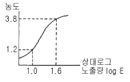
- 0.82
- 1.63
- 4.33
- 10.35
(정답률: 알수없음)
35. 수동 현상방법에 대해 기술한 것으로 틀린 것은?
- 현상액이 25℃이상되면 현상작용이 급속히 빨라진다.
- 일반적인 현상은 20℃에서 실시한다.
- 필름 2매 이상을 동시에 현상할 때는 필름끼리 접착되지 않도록 해야 된다.
- 정지과정은 생략된다.
(정답률: 알수없음)
36. 두꺼운 시험체를 짧은 시간에 촬영하기 위한 방법으로 틀린 것은?
- 흡수계수가 커지게 되는 조치를 한다.
- 투과선량율을 크게 한다.
- 선원의 강도를 크게 한다.
- 에너지가 큰 X선을 이용한다.
(정답률: 알수없음)
37. X선 발생장치를 이용하여 방사선투과검사를 할 경우 투과사진의 상질에 직접 영향을 주는 인자가 아닌 것은?
- 초점의 크기
- 관전류
- 음극과 양극간 거리
- 관전압
(정답률: 알수없음)
38. 방사선투과시험시 시험체 형태에 맞게 구멍이 뚫린 납판(lead mask)을 사용하는 경우가 있는데 그 이유는?
- 명료도를 감소시키기 위해서
- 산란방사선을 감소시키기 위해서
- 시편의 흔들림을 방지하기 위해서
- X선을 경화(hardening)시키기 위해서
(정답률: 알수없음)
39. 방사선투과검사시 투과사진상에 나타날 수 있는 인위적 결함의 원인이 아닌 것은?
- 눌림 자국
- 연박증감지의 줄무늬
- 정전기 자국
- 형광 증감지 자국
(정답률: 알수없음)
40. X선 발생장치를 이용한 방사선투과검사시 여과판(Filter) 사용에 따른 효과가 아닌 것은?
- 장파장측 X선 흡수
- X선 투과력 증가
- 반가층이 커짐
- 선질 증가
(정답률: 알수없음)
3과목: 방사선안전관리, 관련규격 및 컴퓨터활용
41. 1인치 두께의 탄소강 시험체를 ASME Sec.V에 따라 2-2T 감도로 촬영하려 할 때 사용해야 할 투과도계의 두께와 나타나야할 구멍으로 맞는 것은 ?(단, 단위는 인치이다.)
- 0.010 두께, 0.020의 구멍
- 0.020 두께, 0.040의 구멍
- 0.030 두께, 0.060의 구멍
- 0.040 두께, 0.080의 구멍
(정답률: 알수없음)
42. ASME Sec.Ⅴ의 구간표시 위치에 관한 것으로 필름 측에 구간표시를 부착해도 될 경우는?
- 원통형 또는 원추형 부품의 종축 이음부
- 오목한 면이 선원쪽을 향하고 선원-시험체간의 거리가 내측 반경보다 클 때
- 볼록한 면이 선원쪽을 향하고 선원-필름간의 거리가 외반경보다 클 때
- 투과사진이 구간표시 적용범위이외를 나타낼 때
(정답률: 알수없음)
43. 방사선 방어의 3대 원칙에 포함되지 않는 사항은?
- 거리
- 시간
- 차폐
- ALALA
(정답률: 알수없음)
44. KS D 0241에 따라 결함의 등급분류시 알루미늄 주물의 방사선 투과사진에서 결함이 기포인 경우 결함의 크기와 점수와의 관계가 틀리는 것은?
- 0.3㎜ 초과 1.0㎜ 이하 : 1
- 1.0㎜ 초과 2.0㎜ 이하 : 2
- 2.0㎜ 초과 4.0㎜ 이하 : 4
- 4.0㎜ 초과 8.0㎜ 이하 : 10
(정답률: 알수없음)
45. KS B 0845에 따라 모재 두께 50㎜인 용접부에 발생한 2종 흠(결함)을 분류할 때 1류, 2류, 3류에 대한 최대 길이가 각각 12mm, 16mm, 24mm일 때 10mm의 융합불량에 대한 올바른 분류 방법은?
- 1류로 한다.
- 2류로 한다.
- 계수 2를 곱한 길이가 20mm이므로 3류로 한다.
- 융합불량은 길이에 관계없이 4류로 한다.
(정답률: 알수없음)
46. 방사선 장해로 인한 신체적 영향 중 방사선의 관리 및 방호의 관점에서 확률적 효과에 해당되는 것은?
- 악성 종양
- 백내장
- 수명 단축
- 유전적 장해
(정답률: 알수없음)
47. 다음 중 가장 투과력이 큰 방사선을 방출하는 것은?
- Ir-192
- Co-60
- 100 keV의 X선
- Cs-137
(정답률: 알수없음)
48. 선원의 크기가 3㎜, 선원과 필름간 거리가 80㎝, 선원과 검사체 사이의 거리가 700㎜일 때 ASME Sec.V에 의한 기하학적 불선명도(mm)는?
- 0.315
- 0.428
- 0.625
- 2400
(정답률: 알수없음)
49. LAN을 구성하는 위상(Topology)의 형태로 중앙에 허브 컴퓨터를 두고 모든 PC가 주 허브컴퓨터에 연결된 방식은?
- 스타형
- 링형
- 버스형
- 트리형
(정답률: 알수없음)
50. 작업종사자의 피부에 대한 연간 등가선량한도는?
- 30밀리시버트(mSv)
- 50밀리시버트(mSv)
- 300밀리시버트(mSv)
- 500밀리시버트(mSv)
(정답률: 알수없음)
51. KS D 0227은 주강품의 방사선투과시험방법 및 투과사진의 등급분류 방법에 대하여 규정하고 있는데 시험시야 내에 그림과 같이 선상 수축관이 존재할 경우 시험시야의 등급 분류를 위한 선상 수축관의 결함길이는 얼마로 계산하여야 하는가?
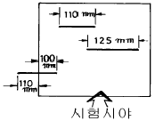
- 210㎜
- 235㎜
- 335㎜
- 445㎜
(정답률: 알수없음)
52. 다음 방사선 장해의 정도에 영향을 미치는 여러 가지 인자중 조사(照査)조건에 해당하는 것은?
- 선질
- 성별
- 온도
- 연령
(정답률: 알수없음)
53. 다음 프로그램중에서 기능이 서로 다른 한가지는?
- Winzip
- Winrar
- Winsock
- Winarj
(정답률: 알수없음)
54. 원자력법에 의한 수시출입자의 피부 및 손, 발에 대한 연간 등가선량한도(mSv)는?
- 300
- 150
- 100
- 50
(정답률: 알수없음)
55. 다음은 국가를 나타내는 도메인들이다. 영국에 해당하는 도메인 명은?
- au
- ca
- uk
- fr
(정답률: 알수없음)
56. KS D 0242에 의한 알루미늄 용접부의 투과시험시 사용하는 계조계의 형의 종류를 설명한 것으로 알맞는 것은?
- G형은 G1, G2, G3가 있다.
- F형은 F1, F2, F3가 있다.
- D형은 D1, D2, D3, D4가 있다.
- E형은 E1, E2, E3가 있다.
(정답률: 알수없음)
57. KS B 0845에 따라 결함을 분류할 때 1종 흠(결함)은?
- 둥근 블로홀
- 슬래그
- 균열
- 용입부족
(정답률: 알수없음)
58. 다음 차폐재중 동일한 방사선에 대해서 가장 얇은 두께로서 차폐효과를 올릴 수 있는 것은?
- 우라늄
- 납
- 철
- 콘크리트
(정답률: 알수없음)
59. 탄소강 재질로 만들어진 투과도계를 ASME 규격의 권고사항에 따라 적용하기 어려운 시험체 재질은?
- 저합금강
- 스텐레스강
- 망간-니켈-알루미늄청동
- 니켈-크롬-철 합금
(정답률: 알수없음)
60. 한글97에서 우측과 같은 문서 양식을 만들려고 한다. 어떠한 기능을 사용해야 하는가?
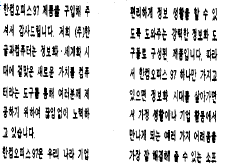
- 장평
- 자간
- 다단
- 페이지 속성
(정답률: 알수없음)
4과목: 금속재료 및 용접일반
61. 보기와 같은 용접부 형상의 용접 도시기호로 가장 적합한 것은?
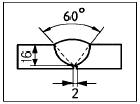
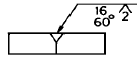
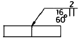
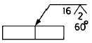
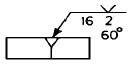
(정답률: 알수없음)
62. 저항용접의 3대 필요조건이 아닌 것은?
- 용접전류
- 용접전압
- 통전시간
- 가압력
(정답률: 알수없음)
63. 순금속에 가장 가까운 것은?
- 청동
- 주철
- 구리
- 특수강
(정답률: 알수없음)
64. 물리적 성질이 아닌 것은?
- 비중
- 용융잠열
- 열팽창계수
- 충격흡수계수
(정답률: 알수없음)
65. 가스용접 중 산소가 반대로 흐를 때(역류)의 주요 원인이 아닌 것은?
- 토치의 기능 불량
- 팁의 막힘
- 팁과 모재의 접촉
- 산소 압력의 과소
(정답률: 알수없음)
66. 금속중에 0.01-0.1㎛ 정도의 미립자를 수% 정도 분사시켜 입자자체가 아니고 모체의 변형저항을 높여서 고온에서의 탄성률, 강도 및 크리프 특성을 개선시키기 위해 개발된 입자분산강화금속은?
- FRM(Fiber Reinforced Metals)
- MMC(Metal Matrix Composite)
- PSM(Particle Dispersed Strengthened Metals)
- FRS(Fiber Reinforced Super alloys)
(정답률: 알수없음)
67. 전연성이 매우 커서 10-6cm 두께의 박판으로 가공할 수있는 것은?
- Au
- Sn
- Ir
- Os
(정답률: 알수없음)
68. 그림과 같이 판 두께가 다른 맞대기 용접이음 설계할 때 맞대기 이음부의 기울기 x : y 는 다음 중 얼마로 하는 것이 가장 적합한가?
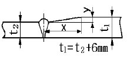
- 1.5 : 1
- 2 : 1
- 3 : 1
- 5 : 1
(정답률: 알수없음)
69. 용접 균열의 발생의 감소대책 설명으로 틀린 것은?
- 필릿용접의 루트부분의 힐 균열(heel crack)은 용접입열을 크게하여 감소한다.
- 맞대기 이음 용접시 발생되는 토 균열(toe crack)은 예열 및 강도가 낮은용접봉을 사용한다
- 고탄소강 및 저합금강의 모재열 영향부의 비드밑균열(under bead crack)은 저수소계 용접봉을 사용한다.
- 맞대기용접의 가접시 발생되는 루트균열(root crack)은 수소량의 감소를 위하여 예열 및 후열을 한다.
(정답률: 알수없음)
70. 분말야금의 소결방법에서 고온압착법에 관한 일반적인 설명 중 옳은 것은?
- 기공이 없는 소결체를 얻을 수 있다.
- 대량생산방식에 적합하다.
- 소결시간이 많이 소요된다.
- 형틀에 소요되는 비용이 상대적으로 저렴하다.
(정답률: 알수없음)
71. 제트기관, 가스터빈 등의 주요 부품에 사용되는 초내열 합금계가 아닌 것은?
- Ni - Cr계
- Ni - Cr - Co계
- Co - Cr - W계
- Mn - Cu - Pb계
(정답률: 알수없음)
72. 철(Fe)의 동소변태에 관한 설명 중 옳지 않은 것은?
- 일정온도에서 급격히 비연속으로 일어난다.
- 동일물질에서 원자배열의 변화로 생긴다.
- 철의 동소변태는 A3와 A4이며 가역적이다.
- 동소변태는 가열시 변태온도보다 냉각시 변태온도가 높다.
(정답률: 알수없음)
73. Fe3C가 큰 형태로 있을 때 구상화 처리의 가장 적합한 방법은?
- A3선 상까지 가열하고 냉각시킨다.
- A2변태점 이상의 온도에서 장시간 가열한 후 냉각시킨다.
- A1변태점 상하 20∼30℃간에서 가열과 냉각을 반복한다.
- Acm선 상까지 가열해서 냉각시킨다.
(정답률: 알수없음)
74. 0.4% C강을 담금질했을 때 확보할 수 있는 최고 담금질 경도(HRC)는?
- 15
- 35
- 50
- 70
(정답률: 알수없음)
75. 용접 이음부 밑쪽에 녹지 않은 짧은 와이어가 붙어 있는 현상으로 용융지 선단으로 용접 와이어를 빨리 공급할때 일어나는 MIG 용접 이음의 결함은 무엇이라 하는가?
- 위스커스
- 스패터링
- 용융 부족
- 용입 부족
(정답률: 알수없음)
76. 아크 전류가 200A이고, 아크 전압이 30V, 무부하 전압이 60V일 때, 이 교류 용접기의 역률은 얼마인가?(단, 내부 손실은 없다.)
- 30%
- 40%
- 50%
- 60%
(정답률: 알수없음)
77. 그림과 같은 격자 결함의 구조명은?
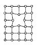
- 모자이크 구조(mosaic block)
- 공격자점(vacancy)
- 점결함(point defect)
- 격자간 원자(interstitial atom)
(정답률: 알수없음)
78. 아크 용접시 비드 시점의 불완전 용착부나 종점의 크레이터를 방지하기 위하여 사용하는 것은?
- 엔드 텝(end tab)
- 받침(backing)
- 콤비네이션 스퀘어(combination square)
- 접지 클램프(ground clamp)
(정답률: 알수없음)
79. 불활성 가스 텅스텐 아크용접법으로 스테인리스 강판을 접합할 때, 용접 준비사항에 대한 설명으로 틀린 것은?
- 정확한 홈 가공이 필요하다.
- 용접 전 홈 부분의 청소를 철저히 한다.
- 전극봉은 토륨 텅스텐봉을 사용한다.
- 전극봉 끝은 둥글게 하여 용접 표면에 넓게 청정작용을 할 수 있도록 한다.
(정답률: 알수없음)
80. 진공(vacuum)상태에서의 납땜(brazing)법인 것은?
- 노내 경납땜(furnace brazing)
- 아크 경납땜(arc brazing)
- 저항 경납땜(resistance brazing)
- 담금 경납땜(dip brazing)
(정답률: 알수없음)